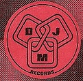

홈 > 브랜드 매거진 > Enja Records
Enja Records
엔야 레코드(Enja Records)는 1971년 마티아스 빙켈만과 호르스트 베버가 독일 뮌헨에서 설립한 재즈 레이블이다. 'European New Jazz'에서 이름을 따왔으며 유럽 재즈·아방가르드를 다루는 독립 레이블이다.
산업 분야 미디어·엔터테인먼트 · 공개 등급 디렉토리 · 브랜드 평가 3.2 ★
한눈에 보는 브랜드
엔야 레코드(Enja Records)는 1971년 마티아스 빙켈만과 호르스트 베버가 독일 뮌헨에서 설립한 재즈 레이블이다. 'European New Jazz'에서 이름을 따왔으며 유럽 재즈·아방가르드를 다루는 독립 레이블이다.
브랜드 관점
엔야 레코드는 유럽 재즈·아방가르드를 대표하는 독일 뮌헨의 독립 레이블이다. 설립·운영 주체, 주력 장르, 대표 아티스트를 함께 보면 미디어·엔터테인먼트 안에서의 위치가 또렷해진다.
시작과 성장
1971년 마티아스 빙켈만과 호르스트 베버가 뮌헨에서 설립했고, 말 월드론의 뮌헨 공연 녹음으로 출발했다. 1986년 두 창업자가 갈라서며 레이블도 분화됐다.
브랜드 아이덴티티
Enja Records의 아이덴티티는 브랜드명, 로고 사용 여부, 업종 언어, 국가적 배경을 중심으로 정리됩니다. 공개 로고 자산은 추후 권리 확인 후 보강할 수 있도록 텍스트 메타데이터 중심으로 관리합니다.
확장 지식
뮌헨 기반 독립 재즈 레이블로 1986년 두 창업자가 갈라서며 분화됐다.
제품과 서비스
재즈·아방가르드 음반을 발매한다. 말 월드론, 알렉산더 폰 슐리펜바흐 등이 대표 아티스트다.
사람들
마티아스 빙켈만과 호르스트 베버가 1971년 설립했다.
현재 상태
타임라인
정리된 연도형 이벤트가 없습니다.
BI/CI 변천사
확인된 BI/CI 이미지가 아직 없습니다.
함께 읽을 브랜드
AZ는 프랑스의 미디어·엔터테인먼트 브랜드로, 콘텐츠 포맷, 팬덤, 채널 운영, 지식재산권 확장이 함께 작동하는 영역입니다.
인탁트 레코드(Intakt Records)는 1986년 파트릭 란돌트가 스위스 취리히에서 설립한 재즈 레이블이다. 프리·아방가르드 재즈를 다루는 독립 레이블로, 이렌...
체스키 레코드(Chesky Records)는 1986년 데이비드·노먼 체스키 형제가 미국 뉴욕에서 설립한 오디오파일 음반 레이블이다. 고음질 재즈·클래식 녹음으로 알...

미디어·엔터테인먼트 · 디렉토리DJM RecordsDJM 레코드(DJM Records)는 1969년 영국에서 음악 출판사 딕 제임스 뮤직 산하로 만들어진 음반 레이블이다. 엘튼 존의 초기 영국 음반을 발매한 것으로...
 미디어·엔터테인먼트 · 디렉토리Equal Vision Records
미디어·엔터테인먼트 · 디렉토리Equal Vision Records이퀄 비전 레코드(Equal Vision Records)는 1991년 레이 카포가 미국 뉴욕주 올버니에서 설립한 하드코어 레이블이다. 포스트하드코어·하드코어를 대표하...
미디어·엔터테인먼트 · 디렉토리Lookout! Records룩아웃! 레코드(Lookout! Records)는 1987년 래리 리버모어와 데이비드 헤이즈가 미국 캘리포니아에서 설립한 펑크 레이블이다. 그린데이 초기작을 발매한...
미디어·엔터테인먼트 · 디렉토리Megaforce Records메가포스 레코드(Megaforce Records)는 1982년 존·마샤 자줄라 부부가 미국에서 설립한 헤비메탈 레이블이다. 메탈리카의 데뷔작 'Kill 'Em All...
2419 Record Label는 네덜란드의 미디어·엔터테인먼트 브랜드로, 콘텐츠 포맷, 팬덤, 채널 운영, 지식재산권 확장이 함께 작동하는 영역입니다.